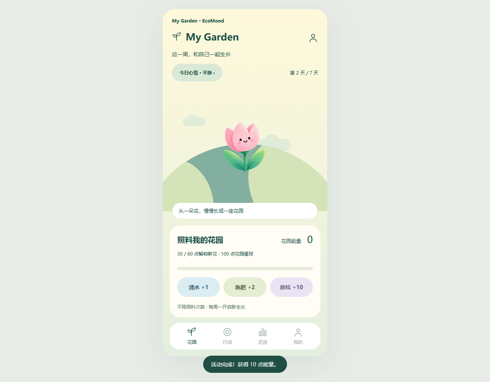
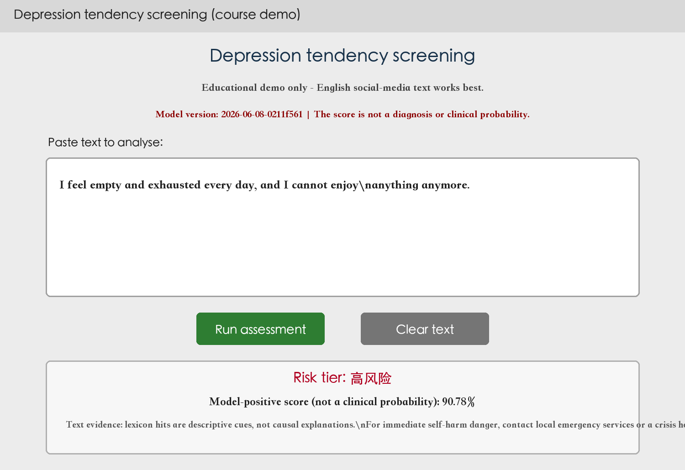
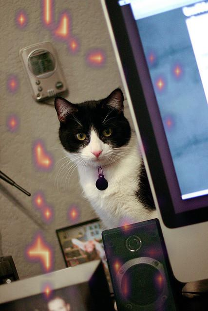

从交互设计到机器学习，选择一个项目，查看页面、实验与实现过程。
以 1400–1850 年欧洲艺术史为主线，围绕 100 件跨媒介策展样本，呈现五个时期的重叠、转型与承续。

以数字花园为主题的移动端交互设计，把浇水反馈与呼吸练习融入日常使用。

面向英文社交媒体文本的抑郁症相关文本分类课程实验，涵盖数据处理、特征提取、训练与评估。

结合图像和英文问题生成回答，并通过注意力展示、独立题集与改进实验检查模型表现。